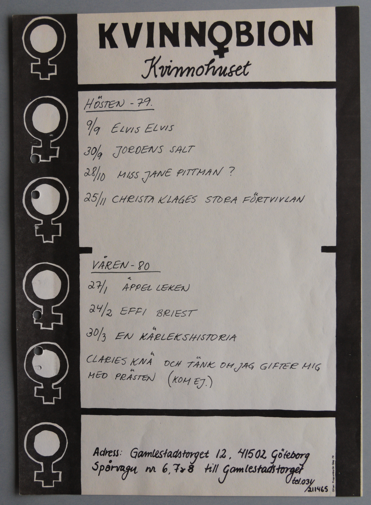

Digitiserad version av programblad från Kvinnobion år 1979-1980
Faksimil
Transkription
KVINN♀BION
Kvinnohuset
Kvinnohuset
Hösten -79.
9/9 ELVIS ELVIS
30/9 JORDENS SALT
28/10 MISS JANE PITTMAN ?
25/11 CHRISTA KLAGES STORA FÖRTVIVLAN
Våren -80
27/1
ÄPPEL LEKEN
ÄPPELLEKEN
24/2 EFFI BRIEST
30/3 EN KÄRLEKSHISTORIA
CLARIES KNÄ OCH TÄNK OM JAG GIFTER MIG
MED PRÄSTEN (KOM EJ.)
Adress:
Gamlestadstorget 12
415 02
Göteborg
Spårvagn nr 6, 7 & 8 till Gamlestadstorget
tel.031/
211465
Offset: Programbyrån Gbg -79